Prochain evenement
Lancement du serveur mercredi 22 septembre à 21h!
-+ Liste des joueurs
{{player.name}}
Temps de jeu : {{player.data.stats.minecraft_custom.minecraft_play_time}}
Nombre de morts : {{player.data.stats.minecraft_custom.minecraft_deaths}}
-+ Liste des origines
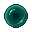
Enderian
- [+] Active (avec cooldown) : envoie une enderpearl gratuite qui ne fait pas de dégat
- [+] Tape plus loin que la normale
- [-] Prend des dégâts au contact de l'eau
- [-] Ne voit pas les joueurs qui portent des citrouilles sur la tête
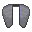
Elytrian
- [+] Active (avec cooldown) : peut se propulser dans les airs
- [+] Possède des Elytras par défaut
- [+] Inflige deux fois plus de dégâts lors d’un vol en elytra
- [-] Prends deux fois plus de dégats de chute
- [-] Ne peut porter que des armures légères
- [-] N'aime pas être enfermé dans des pièces a faible hauteur sous plafond trop longtemps
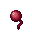
Arachnid
- [+] Active (on/off) : peut monter aux parois
- [+] Faire des dégats à un mob ou un joueur pose une cobweb à ses pieds
- [=] Ne mange pas de légume
- [-] Possède 7 coeurs
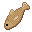
Merling
- [+] Respire sous l'eau
- [+] Voit sous l'eau
- [+] Casse les blocs facilement sous l'eau
- [+] Nage rapidement sous l'eau
- [+] Ne coule pas sous l'eau
- [-] Ne respire pas hors de l’eau sans aide d’enchantements ou sans boire des bouteilles d’eau
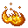
Blazeborn
- [-] Spawn dans le Nether
- [+] Immunisé aux dégats de feu
- [+] Immunisé au poison et au débuff hunger
- [+] Fait plus de dégats quand enflamé
- [-] Prend des dégâts au contact de l'eau
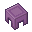
Shulk
- [+] Active (on/off) : possède un inventaire bonus qui ne drop pas à la mort
- [+] Possède de l'armure par défaut
- [+] Peut casser de la stone sans pioche
- [-] N'aime pas être exposé au soleil
- [-] Ne peut pas utiliser de bouclier
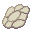
Phantom
- [+] Active (on/off) : peut devenir invisible et traverser les blocs
- [-] Possède 7 coeurs
- [-] Brûle au contact du soleil quand il n'est pas invisible
- [-] Doit manger plus que la normale
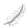
Avian
- [+] Active (on/off) : est très rapide
- [+] Tombe lentement
- [=] Ne peut pas manger de viande
- [-] Ne peut dormir qu'en hauteur
Feline
- [+] Saute haut en courant
- [+] Voit mieux la nuit
- [+] Ne prend pas de dégat de chute
- [+] Fait peur aux Creepers
- [-] Possède 9 coeurs
- [-] Ne peut pas miner si le bloc de pierre est au contact de deux autres blocs de pierre (Minerais compris)
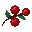
Fox
- [+] Active (on/off) : peut se propulser dans les airs
- [+] Active (on/off) : possède un inventaire bonus qui ne drop pas à la mort
- [+] Les berry bush ne font pas de dégat
- [+] Les berries donnent plus de nourriture que la normale
- [+] Est légèrement plus rapide
- [+] Ne prend pas de dégat de chute
- [=] Est très petit
- [-] Possède 5 coeurs
- [-] Ne peut dormir qu'en profondeur
- [-] Ne peut pas utiliser de bouclier
- [-] Ne peut pas utiliser de casque
- [-] Doit manger plus que la normale
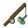
Strider
- [-] Spawn dans le Nether
- [+] Immunisé aux dégats de feu
- [+] Peut marcher sur la lave
- [=] Ne peut pas manger de viande
- [-] Doit manger plus que la normale
- [-] Est ralenti quand il n'est pas en feu
- [-] Prend des dégâts au contact de l'eau
Ghast
- [-] Spawn dans le Nether
- [+] Peut voler
- [+] Tombe lentement
- [+] Immunisé aux dégats de feu
- [+] Immunisé au poison et au débuff hunger
- [=] Est plus grand que la normale
- [-] Possède 5 coeurs
- [-] Ne peut pas utiliser de bouclier
- [-] Doit manger plus que la normale
- [-] Ne peut pas dormir
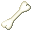
Wolf
- [+] Est légèrement plus rapide
- [+] Voit mieux la nuit
- [+] Fait plus de dégats la nuit
- [+] Possède de l'armure par défaut
- [=] Est plus petit que la normale
- [=] Ne peut pas manger de légume
- [-] Ne peut pas utiliser de bouclier
- [-] Ne peut pas utiliser de casque
- [-] Doit manger plus que la normale
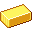
Piglim Rogue
- [+] Active (on/off) : possède un inventaire bonus qui ne drop pas à la mort
- [-] Spawn dans le Nether
- [+] Démarre avec un équipement de départ
- [+] Fait plus de dégats avec des spectral arrows
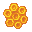
Apian
- [+] Active (on/off) : Flotte lentement dans les air
- [+] Infliger des dégats au poing empoisonne pendant un très court instant
- [-] Possède 5 coeurs
- [-] Prend des dégâts au contact de l'eau
- [-] N'aime pas être exposé à la nuit
-+ Liste des classes
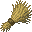
Farmer
- [+] A une chance de doubler ses récoltes agricoles
- [+] La bone meal est deux fois efficace
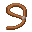
Rancher
- [+] A une chance de doubler le nombre de naissance quand il reproduis des animaux
- [+] Reçoit plus d'items en tuant des animaux
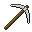
Miner
- [+] Mine des matériaux plus vite que la moyenne
- [+] Ne se fatigue pas en minant
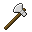
Lumberjack
- [+] Casse les petits arbres d'un coup
- [+] A une chance de doubler les planches de bois craftées à partir d'une bûche
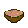
Cook
- [+] Crafte de la nourriture plus efficace
- [+] Obtient plus d'expèrience en cuisant de la nourriture dans un smoker
Blacksmith
- [+] Crafter des équipements leur donne un petit bonus
- [+] Réparer un équipement coute moins de matériaux
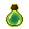
Cleric
- [+] Ajouter une bouteille d'eau à la fin de la création des potions permet de doubler leur durée
- [+] Obtient de meilleurs enchantements
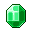
Merchant
- [+] Les villageois ne sont jamais a court de stock lors d'un échange
- [+] Les Wandering Traders offrent plus d'items rares
Explorer
- [+] Débute la partie avec une boussole, une montre et 9 empty maps
- [+] Ne s'épuise pas en courant
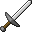
Warrior
- [+] Fait plus de dégats avec les armes
- [+] Est moins lent en utilisant un shield
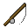
Fisherman
- [+] Débute la partie avec une canne a pêche mending
- [+] Est plus chanceux lors de la pêche
- [+] Pêche deux poissons au lieux d'un
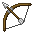
Archer
- [+] Tous les projectiles sont plus précis
- [+] Est moins lent en utilisant un arc
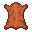
Rogue
- [+] Le pseudo ne s'affiche pas au travers des murs
- [+] Après s'être accroupi pendant 10s, fait moins de bruit et fait plus de dégats en attaquant par derrière
Beastmaster
- [+] Les animaux adoptés ont un bonus de vie et d'attaque
- [+] Les animaux adoptés proches obtiennent les effets des potions bues